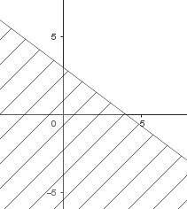
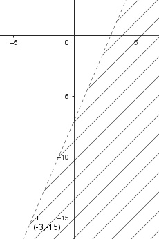
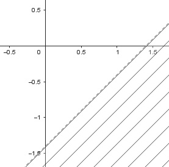

Aufgabe 62 Zeichnen Sie die Graphen der Ungleichungen: a) 3x + 4y ≤ 12 b) 7x - 3y > 21 c) 2(2,5x - 4) > 5y - 1 a) Randgerade: 3x + 4y = 12 |-3x 4y = 12 - 3x |:4 y = 3 - 0,75x gehört zur Lösungsmenge Halbebene: y ≤ 3 - 0,75x

b) Randgerade: 7x - 3y = 21 |+3y - 21 3y = 7x - 21 |:3 7 y = ---x - 7 gehört nicht zur Lösungsmenge 3 Halbebene mit Punkt (-3|-15): 7 y < ---x - 7 3
c) Randgerade: 2(2,5x - 4) = 5y - 1 5x - 8 = 5y - 1|+1 5x - 7 = 5y |:5 y = x - 1,4 gehört nicht zur Lösungsmenge Halbebene: y < x - 1,4